ABOUT US
back⬇ Scroll Down ⬇
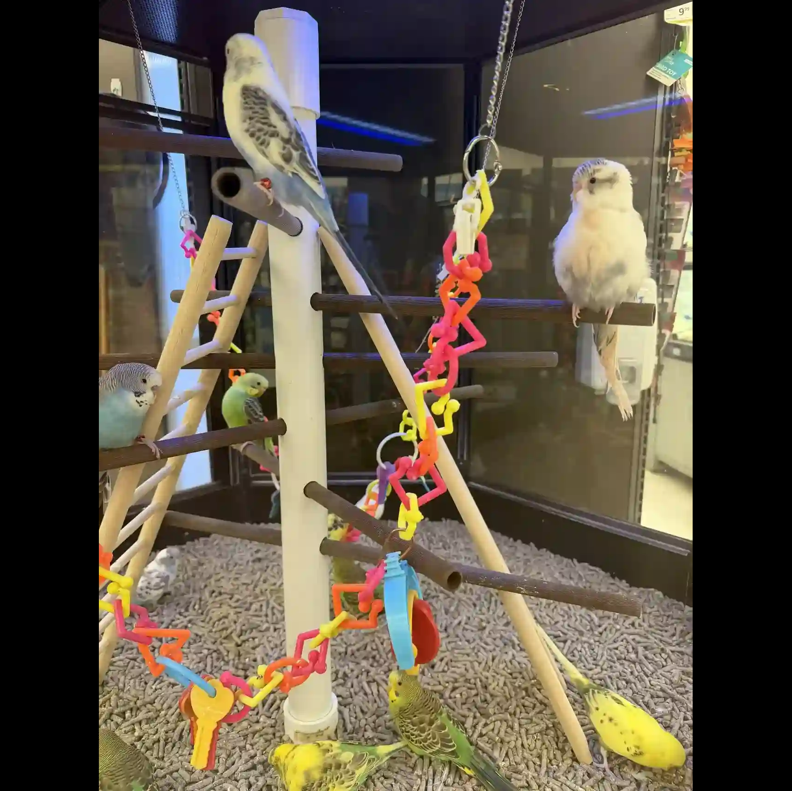
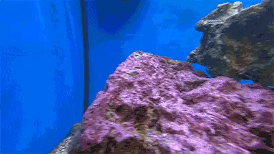
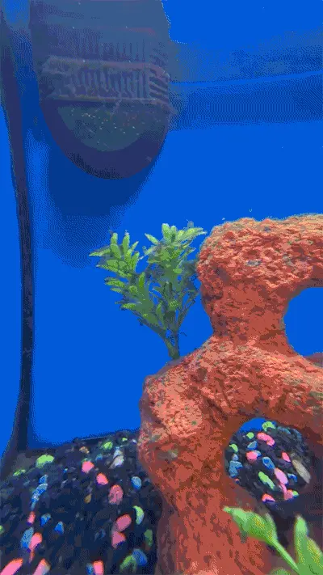
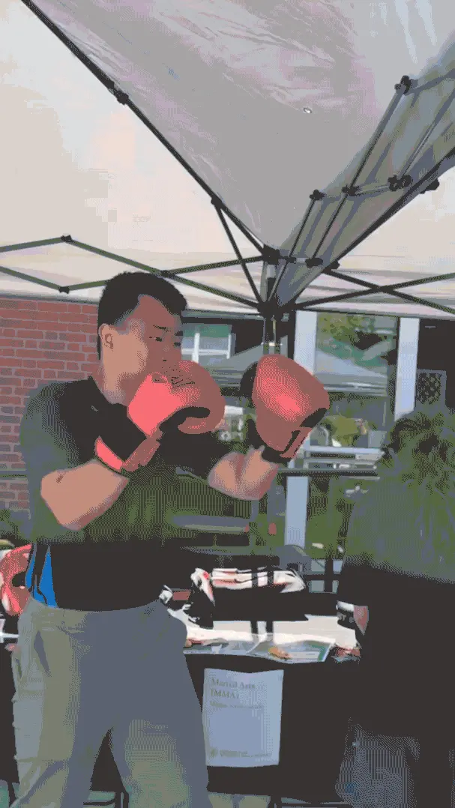
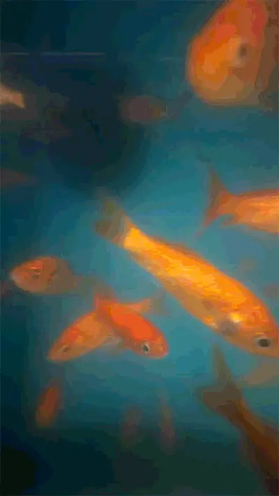
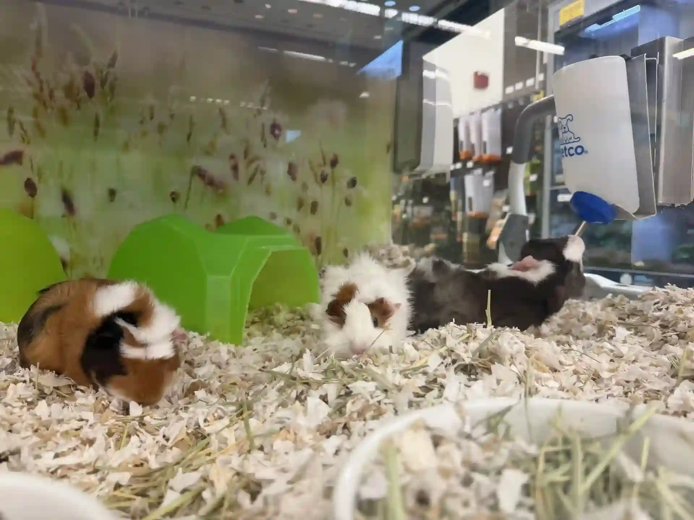
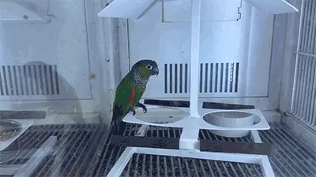
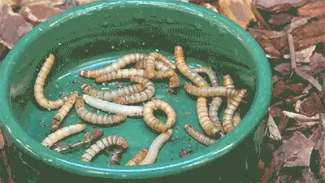
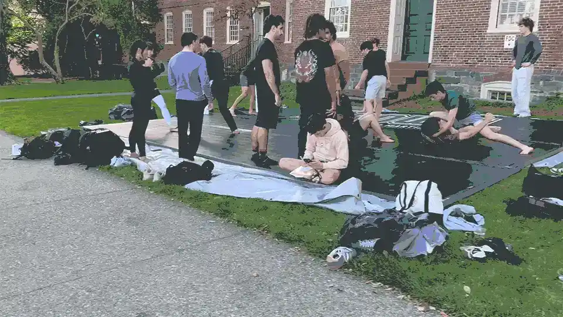
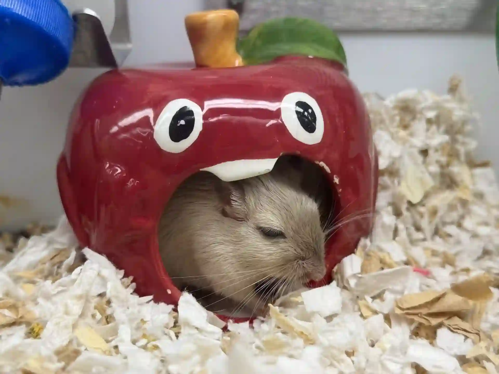
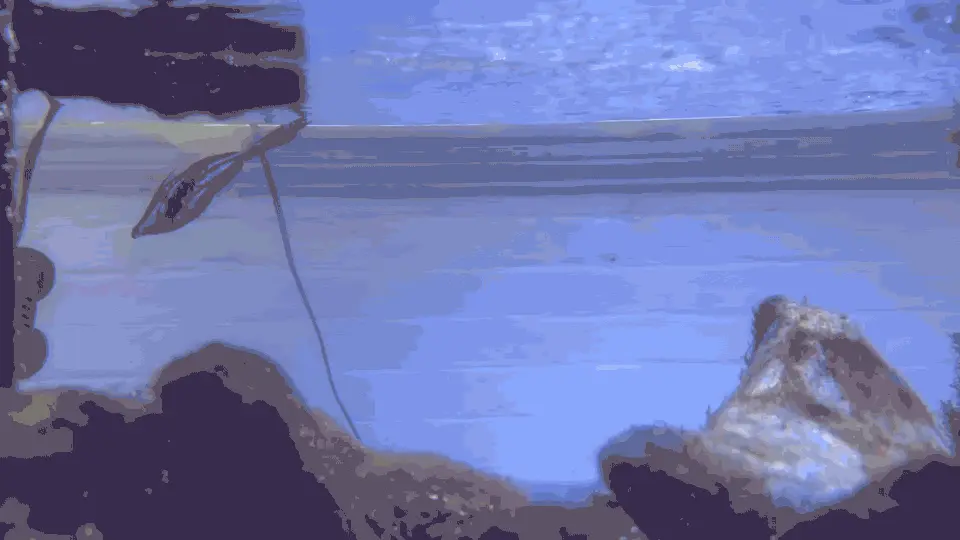
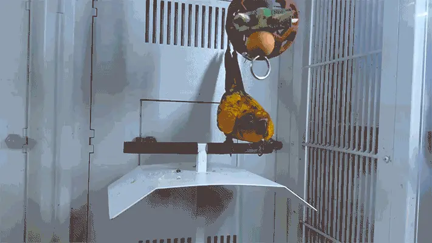
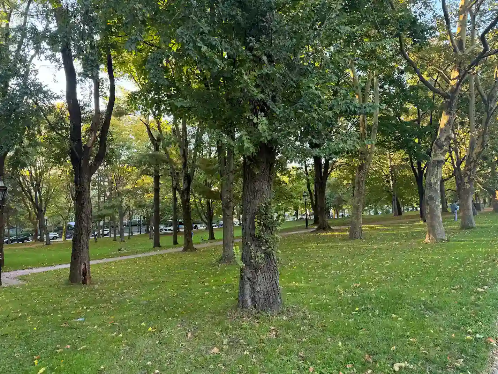
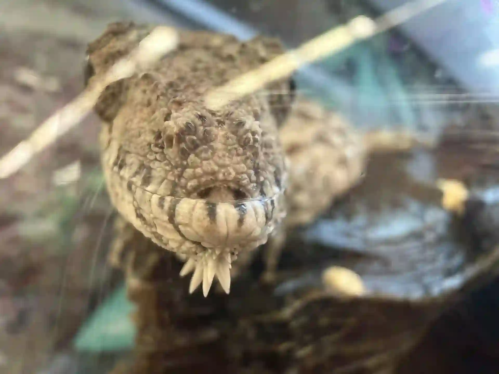
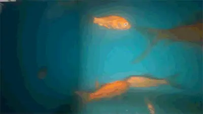
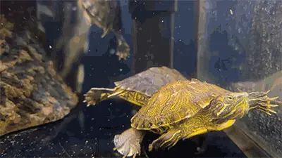
Dead or Alive
Is a pivate collection I have compiled of my photography experience around Rhode Island in 2026. It organizes my interests, mainly animals and printed art, into categories ranging from Alive to Non Living. I was inspired to make this work from my fascination with the concept of biological animation, and what constitutes a living breathing body, soul, and mind. Is it merely a scientific question, or are there artistic components too?